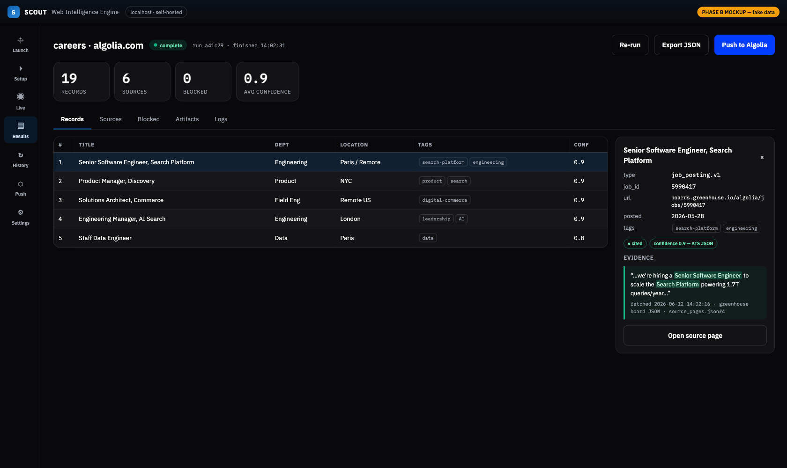

Core acquisition
Scrape, crawl, map, extract, and screenshot pages with Crawl4AI-backed rendering.

Private Beta
Scout is a self-hosted acquisition workbench for AI agents, search demos, and intelligence workflows. Scrape, crawl, capture browser evidence, structure records, and keep the artifacts.
Not another crawler API
Generic crawlers fetch pages. Scout is built for the workflow around the fetch: evidence, blocked-page truth, browser handoff, typed records, artifact folders, and downstream integrations.
Use hosted crawlers when you need managed scale. Use Scout when you need local control over the acquisition process and records your tools can trust.
Capabilities
Scrape, crawl, map, extract, and screenshot pages with Crawl4AI-backed rendering.
Capture live pages, screenshots, DOM, text, and links through browser/CDP workflows.
Turn captured pages into product, company, careers, investor, news, and research records.
Extract listing and product data, then prepare Algolia-ready JSON and NDJSON records.
Preserve manifests, source pages, blocked pages, validation findings, and reports.
Run through CLI, HTTP, Docker, local app, Claude/Codex skill, and future MCP tools.
Positioning
| Need | Hosted crawler | Scout |
|---|---|---|
| Managed scale | Best fit | Not the first wedge |
| Evidence and artifacts | Varies | Core output |
| User/browser-session capture | Varies by platform | Core design direction |
| Product-to-search records | Requires custom normalization | Built-in workflow |
| Local/operator control | Secondary | Primary |
How it works
Quickstart
Scout is currently best tested as a local or Docker service. The hosted product decision comes later.
pip install git+https://github.com/arijitchowdhury80/scout.git
playwright install chromium
scout serve
curl http://localhost:8421/healthBeta status
Scrape, crawl, map, screenshot, structure, product records on friendly sites, artifacts, Algolia preview/push.
App workflow, vertical intelligence runners, browser capture, real-website variability.
Hard-site extraction, user-session capture reliability, broad commercial packaging, MCP server.